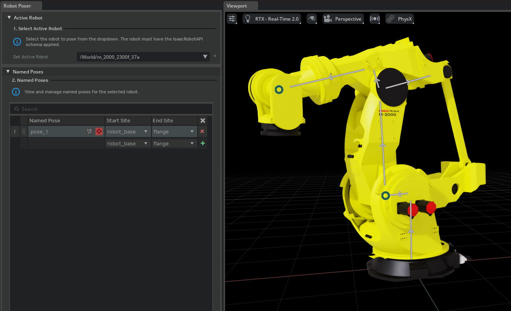

[isaacsim.robot.poser] Isaac Sim Robot Poser#
Version: 1.1.2
Overview#
The isaacsim.robot.poser extension provides functionality for authoring robot poses through inverse kinematics and managing named pose libraries. This extension enables developers to programmatically solve IK problems, store solutions as reusable named poses, and apply joint configurations to robots in both simulation and non-simulation contexts.

Key Components#
RobotPoser#
The RobotPoser class serves as the primary interface for IK-based pose authoring. It wraps a kinematic chain and provides high-level methods for solving inverse kinematics problems.
# Create a poser for a specific robot and kinematic chain
poser = RobotPoser(stage, robot_prim, start_prim, end_prim)
# Solve IK for a target transform
target_transform = Transform(position=[0.5, 0.2, 0.8], orientation=[1, 0, 0, 0])
result = poser.solve_ik(target_transform)
# Apply the solution to the robot
if result.success:
poser.apply_pose(result.joints)
The poser automatically handles unit conversions between radians (for computation) and native USD units (degrees for revolute joints), manages solution seeding for consistent results, and provides anchored positioning to maintain fixed reference points during pose application.
When solve_ik is called without an explicit seed= and no previous solution is cached, the poser tries a small ladder of starting configurations — the joint-limit midpoint, a few deterministic random restarts within the joint limits, and finally zeros — and returns the first attempt that converges. This avoids silent failures on redundant arms (e.g. Franka Panda 7-DOF) where the all-zero configuration is in the wrong convergence basin. For latency-sensitive code paths and for targets close to a known configuration, callers should still pass an explicit seed= to skip the ladder and run the solver exactly once.
PoseResult#
PoseResult encapsulates the outcome of IK solving or named pose queries. It contains joint values, success status, kinematic chain information, and target pose details. This data structure serves as the standard format for pose information exchange throughout the system.
Joint State Management#
The extension provides standalone functions for applying joint configurations without requiring a full RobotPoser instance:
apply_joint_stateapplies joint values via FK during non-simulation or DOF targets during simulationapply_joint_state_anchoredapplies joint values while keeping a specified anchor prim at its original world position
These functions automatically detect the simulation state and choose the appropriate application method.
Functionality#
Named Pose Library#
The extension implements a complete named pose management system that persists poses as USD prims within the robot asset. Named poses are stored under a standardized scope and can be exported/imported as JSON files for sharing between assets or projects.
# Store a successful IK solution as a named pose
store_named_pose(stage, robot_prim, "pick_position", pose_result)
# Apply a named pose later
apply_pose_by_name(stage, robot_prim, "pick_position")
# Export all poses for backup or sharing
export_poses(stage, robot_prim, "/path/to/poses.json")
IK Solving#
The extension integrates with the robot schema’s IK solver system to provide configurable inverse kinematics solving. It supports solution seeding, convergence tolerance adjustment, and joint locking through solver parameters.
Robot Validation#
validate_robot_schema ensures robot prims carry the required IsaacRobotAPI schema before attempting pose operations, providing early validation for robotic workflows.
Integration#
The extension uses omni.kit.menu.utils to integrate pose management capabilities into the Kit interface, enabling users to access robot posing functionality through standard menu systems. It builds upon isaacsim.robot.schema for kinematic chain management and forward kinematics operations.
Enable Extension#
The extension can be enabled (if not already) in one of the following ways:
Define the next entry as an application argument from a terminal.
APP_SCRIPT.(sh|bat) --enable isaacsim.robot.poser
Define the next entry under [dependencies] in an experience (.kit) file or an extension configuration (extension.toml) file.
[dependencies]
"isaacsim.robot.poser" = {}
Open the Window > Extensions menu in a running application instance and search for isaacsim.robot.poser.
Then, toggle the enable control button if it is not already active.
Python API#
Classes
High-level IK controller bound to a specific robot. |
|
Result of an IK solve or named-pose query. |
Functions
Return True if robot_prim carries the IsaacRobotAPI schema. |
|
Apply a joint-state dictionary to the robot. |
|
Apply a joint-state dictionary, keeping anchor_prim fixed. |
|
Store a named pose in the robot asset. |
|
Apply a previously stored named pose. |
|
Retrieve a named pose from the robot asset. |
|
Return the names of all named poses registered on robot_prim. |
|
Remove a named pose from the robot asset. |
|
Export all named poses on robot_prim to a JSON file. |
|
Import named poses from a JSON file and store them on robot_prim. |
Classes#
- class RobotPoser(
- stage: Usd.Stage,
- robot_prim: Usd.Prim,
- start_prim: Usd.Prim | None = None,
- end_prim: Usd.Prim | None = None,
- solver_name: str | None = None,
- *,
- debug: bool = False,
Bases:
objectHigh-level IK controller bound to a specific robot.
Wraps a
KinematicChain(which owns the joint chain, kinematic tree, and FK/USD I/O) and adds IK solving, solution seeding, and unit conversion on top.Construct with a
Usd.Stageand robot prim, optionally providing start/end prims to configure the kinematic chain immediately. The chain can be switched at any time viaset_chain(). Once configured,solve_ik()only requires a target transform and optional solver keyword arguments.- Parameters:
stage – USD stage containing the robot.
robot_prim – Robot root prim (must carry IsaacRobotAPI).
start_prim – Start of the IK chain. Optional.
end_prim – End of the IK chain. Optional.
solver_name – Name of the registered IK solver. Defaults to registry default.
debug – Enable verbose debug output for chain building and FK.
- apply_pose(
- joint_dict: dict[str, float] | PoseResult,
Apply joint values to the robot, anchoring at the start link.
For chains that include backward (child-to-parent) joints the standard root-anchored teleport would move the start link. This method applies the joints and then rigidly corrects the entire robot so the start link remains at its original world position. During simulation delegates to _drive_robot directly.
- Parameters:
joint_dict – Either a mapping of joint prim path to value (radians or meters), or a
PoseResult. When aPoseResultwithsuccess=Falseis passed, the call is a no-op and a warning is logged: failed solves carry the lowest-error attempt across the cold-start ladder, which may be a random-restart configuration, and applying it would teleport the robot to an arbitrary pose.
- classmethod apply_pose_by_target(
- stage: pxr.Usd.Stage,
- robot_prim: pxr.Usd.Prim,
- start_prim: pxr.Usd.Prim,
- end_prim: pxr.Usd.Prim,
- target: Transform,
- seed: ndarray | None = None,
Solve IK and immediately apply the result to the robot.
Constructs a
RobotPoser, solves IK, and applies the solution in a single call — reusing the same kinematic chain for both operations.- Parameters:
stage – USD stage containing the robot.
robot_prim – Robot root prim (must carry IsaacRobotAPI).
start_prim – Start of the IK chain (link or site).
end_prim – End of the IK chain (link or site).
target – Desired end-effector pose in robot-base frame.
seed – Initial joint guess, or None for zero.
- Returns:
PoseResult with success, joints, and target info.
- joints_to_native_values(
- joint_dict: dict[str, float],
Convert a joint dict (radians) to native USD units.
Revolute joints are converted to degrees; prismatic joints are left unchanged. Values are returned in joint-chain order.
- Parameters:
joint_dict – Mapping of joint prim path to value in radians (or meters).
- Returns:
Values in joint-chain order (degrees for revolute, meters for prismatic).
- set_chain(
- start_prim: pxr.Usd.Prim,
- end_prim: pxr.Usd.Prim,
Set or switch the kinematic chain.
Builds a new
KinematicChainand resets the solution seed.- Parameters:
start_prim – Start of the IK chain (link or site).
end_prim – End of the IK chain (link or site).
- set_seed(
- seed: dict[str, float] | ndarray | list[float] | None,
Set the solution seed for the next solve_ik call.
- Parameters:
seed – When a dict, maps joint prim paths to values (as in PoseResult.joints). When array-like, values are in joint-chain order. None clears the seed.
- solve_ik(
- target: Transform,
- seed: dict[str, float] | ndarray | list[float] | None = None,
- *,
- tolerance: float = 0.0001,
- **solver_kwargs: Any,
Solve inverse kinematics for the configured chain.
Seeding strategy#
The candidates the solver is started from depend on what the caller provides:
seed=...(explicit caller-supplied seed): exactly one solve attempt from the given configuration. Lowest latency; recommended on hot paths.No
seed=and a cached_last_solution: the cached configuration is tried first (lowest latency for tracking targets near the previous solve). If that attempt does not converge, the full cold-start ladder is run in parallel as a fallback so a stale cache cannot trap the solver in the wrong basin.No
seed=and no cached solution: the full cold-start ladder (joint-limit midpoint, deterministic random restarts within joint limits, and the all-zero configuration) runs in parallel via a thread pool. The highest-priority converged result wins.
On every path, when no candidate converges the lowest-error attempt is returned with
success=Falseand a single warning is logged recommending an explicitseed=.Parallel ladder execution#
Cold-start (and
_last_solutionfallback) ladders run candidate seeds concurrently on aThreadPoolExecutor. The LM solver in this project is stateless andchain.compute_fkdoes not mutate the chain, so the only shared mutable state across attempts is the result aggregation, which happens after the threads join. The latency of a cold-start ladder is therefore bounded by the slowest single solve, not by the sum of all attempts.- param target:
Desired end-effector pose in the robot-base frame.
- param seed:
Initial joint-value guess. When
None, uses the last successful solution (with cold-start fallback) if available, otherwise runs the cold-start ladder directly.- param tolerance:
Convergence threshold on the pose-error norm.
- param **solver_kwargs:
Forwarded to the IK solver (e.g. lam, iters, null_space_bias, joint_fixed). joint_fixed can be a dict mapping joint prim path to bool to lock DOFs.
- returns:
PoseResult with success, joints, and target info. On failure the joints field still contains the lowest-error attempt so callers can inspect or visualize near-misses; callers must gate calls to
apply_pose()onsuccessto avoid teleporting the robot to a random-restart configuration.
- property joints: list#
Copy of the internal joint chain (list of
Joint).
- property robot_prim: pxr.Usd.Prim#
The robot root prim.
- property solver: IKSolver#
The active
IKSolverinstance.
- property stage: pxr.Usd.Stage#
The USD stage.
- class PoseResult(
- success: bool,
- joints: dict[str,
- float] = <factory>,
- joint_fixed: dict[str,
- bool] = <factory>,
- start_link: str = '',
- end_link: str = '',
- target_position: list[float] | None = None,
- target_orientation: list[float] | None = None,
Bases:
objectResult of an IK solve or named-pose query.
- Parameters:
success – Whether the IK solve converged or the stored pose is valid.
joints – Mapping of joint prim path to joint value (radians for revolute, meters for prismatic).
joint_fixed – Mapping of joint prim path to fixed flag.
Falsefor every movable joint in the chain.start_link – Prim path of the chain start link.
end_link – Prim path of the chain end link / site.
target_position – Target position
[x, y, z]in robot-base frame.target_orientation – Target orientation
[w, x, y, z]quaternion in robot-base frame.
- end_link: str = ''#
- joint_fixed: dict[str, bool]#
- joints: dict[str, float]#
- start_link: str = ''#
- success: bool#
Functions#
- validate_robot_schema(robot_prim: pxr.Usd.Prim) bool#
Return True if robot_prim carries the IsaacRobotAPI schema.
- Parameters:
robot_prim – Robot root USD prim to check.
- Returns:
True if the prim has IsaacRobotAPI.
- apply_joint_state(
- stage: pxr.Usd.Stage,
- robot_prim: pxr.Usd.Prim,
- joint_dict: dict[str, float],
Apply a joint-state dictionary to the robot.
When simulation is stopped, teleports via FK and joint attributes. When simulation is running, sends DOF targets via Articulation.
- Parameters:
stage – USD stage.
robot_prim – Robot root prim (must carry IsaacRobotAPI).
joint_dict – Joint prim path to value (radians or meters).
- apply_joint_state_anchored(
- stage: pxr.Usd.Stage,
- robot_prim: pxr.Usd.Prim,
- joint_dict: dict[str, float],
- anchor_prim: pxr.Usd.Prim,
Apply a joint-state dictionary, keeping anchor_prim fixed.
Like apply_joint_state but rigidly corrects so anchor_prim stays at its original world position. During simulation sends DOF targets directly.
- Parameters:
stage – USD stage.
robot_prim – Robot root prim.
joint_dict – Joint prim path to value (radians or meters).
anchor_prim – Prim to keep fixed.
- store_named_pose(
- stage: pxr.Usd.Stage,
- robot_prim: pxr.Usd.Prim,
- pose_name: str,
- pose_result: PoseResult,
Store a named pose in the robot asset.
Creates an IsaacNamedPose prim under Named_Poses and registers it in the robot’s namedPoses relationship. The prim’s Xform is set to the end-link target pose.
pose_nameis sanitized to a valid USD identifier viapxr.Tf.MakeValidIdentifier()before use. Distinct inputs that sanitize to the same identifier (for example"home:v2"and"home/v2") refer to the same stored pose; this function logs a warning and overwrites the existing prim in that case.- Parameters:
stage – USD stage.
robot_prim – Robot root prim.
pose_name – Human-readable name for the pose. Sanitized as described above before being used as a USD prim name.
pose_result – Must have success=True.
- Returns:
True when the pose was persisted.
- apply_pose_by_name(
- stage: pxr.Usd.Stage,
- robot_prim: pxr.Usd.Prim,
- pose_name: str,
Apply a previously stored named pose.
Teleports when simulation is stopped, drives via joint targets when running.
- Parameters:
stage – USD stage.
robot_prim – Robot root prim.
pose_name – Name of the stored pose. Sanitized to a valid USD identifier using the same rules as
store_named_pose().
- Returns:
True if the pose was found and applied.
- get_named_pose(
- stage: pxr.Usd.Stage,
- robot_prim: pxr.Usd.Prim,
- pose_name: str,
Retrieve a named pose from the robot asset.
- Parameters:
stage – USD stage.
robot_prim – Robot root prim.
pose_name – Name of the stored pose. Sanitized to a valid USD identifier using the same rules as
store_named_pose().
- Returns:
PoseResult, or None when no pose with that name exists.
- list_named_poses(
- stage: pxr.Usd.Stage,
- robot_prim: pxr.Usd.Prim,
Return the names of all named poses registered on robot_prim.
- Parameters:
stage – USD stage.
robot_prim – Robot root prim.
- Returns:
List of pose names.
- delete_named_pose(
- stage: pxr.Usd.Stage,
- robot_prim: pxr.Usd.Prim,
- pose_name: str,
Remove a named pose from the robot asset.
Deletes the IsaacNamedPose prim and removes it from namedPoses.
- Parameters:
stage – USD stage.
robot_prim – Robot root prim.
pose_name – Name of the pose to remove. Sanitized to a valid USD identifier using the same rules as
store_named_pose().
- Returns:
True when the pose existed and was removed.
- export_poses(
- stage: pxr.Usd.Stage,
- robot_prim: pxr.Usd.Prim,
- filepath: str,
- *,
- degrees: bool = False,
Export all named poses on robot_prim to a JSON file.
- Parameters:
stage – USD stage.
robot_prim – Robot root prim.
filepath – Destination file path.
degrees – If True, revolute joint values are written in degrees (native USD units) instead of the default radians.
- Returns:
True on success.
- import_poses(
- stage: pxr.Usd.Stage,
- robot_prim: pxr.Usd.Prim,
- filepath: str,
Import named poses from a JSON file and store them on robot_prim.
- Parameters:
stage – USD stage.
robot_prim – Robot root prim.
filepath – Source file path (as written by export_poses).
- Returns:
Number of poses successfully imported.